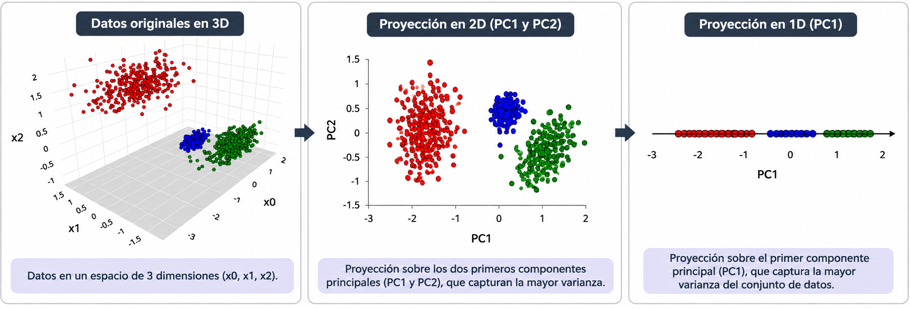
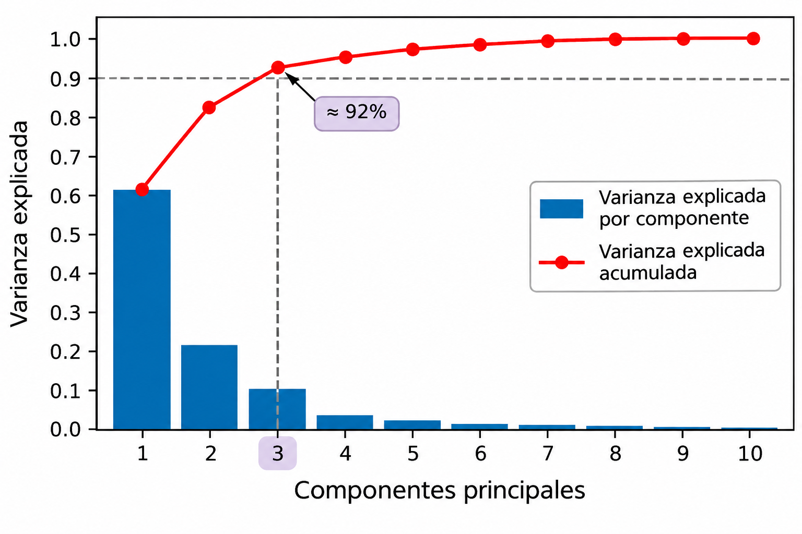
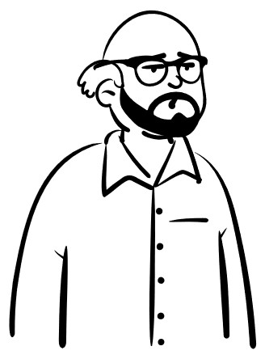

Análisis de Componentes Principales (PCA)
El Análisis de Componentes Principales (Principal Component Analysis, PCA) es una técnica de aprendizaje no supervisado utilizada para reducir la dimensionalidad de los datos.
Su objetivo es construir nuevas variables, llamadas componentes principales, que conserven la mayor cantidad posible de variabilidad de los datos originales.

Los componentes principales son nuevas variables obtenidas mediante combinaciones lineales de las variables originales.
\[ PC_k = w_{k1}(x_1-\mu_1)+w_{k2}(x_2-\mu_2)+\cdots+w_{kp}(x_p-\mu_p) \]
Cada componente tiene una dirección que describe parte de la variabilidad de los datos.
Los componentes son ortogonales entre sí y están ordenados según la varianza que explican.
PCA busca las direcciones sobre las cuales proyectar los datos para conservar la mayor varianza posible.
El primer componente principal se obtiene resolviendo:
\[ \boxed{ \mathbf{w}_1 = \underset{\mathbf{w}}{\operatorname{arg\,max}} \left\{\mathbf{w}^T\Sigma\mathbf{w}\right\}, \quad \text{s.t.} \quad \mathbf{w}^T\mathbf{w}=1 } \]
donde:
Una vez obtenida esta dirección, el primer componente principal se calcula como:
\[ PC_1=\mathbf{w}_1^T(\mathbf{x}-\boldsymbol{\mu}) \]
Los siguientes componentes se obtienen mediante el mismo problema de optimización, agregando restricciones de ortogonalidad respecto a los componentes anteriores, es decir
\[ \boxed{ \begin{aligned} \mathbf{w}_i &= \underset{\mathbf{w}}{\operatorname{arg\,max}} \left\{\mathbf{w}^T\Sigma\mathbf{w}\right\}\\[6pt] \text{s.a.}\quad &\mathbf{w}^T\mathbf{w}=1\\ &\mathbf{w}^T\mathbf{w}_j=0, \quad j=1,\ldots,i-1 \end{aligned} } \]
El problema de optimización de PCA se resuelve encontrando los eigenvectores y eigenvalores de la matriz de covarianzas:
\[ \Sigma\mathbf{w}_k=\lambda_k\mathbf{w}_k \]
donde:
Los eigenvectores se ordenan de acuerdo con sus eigenvalores: \[ \lambda_1\geq\lambda_2\geq\cdots\geq\lambda_p. \]
Recordemos que PCA busca la dirección que maximiza la varianza de los datos proyectados:
\[ \max_{\mathbf{w}}\quad \mathbf{w}^T\Sigma\mathbf{w}, \qquad \text{s.a.}\quad \mathbf{w}^T\mathbf{w}=1 \]
Para resolver este problema utilizamos multiplicadores de Lagrange:
\[ \mathcal{L}(\mathbf{w},\lambda) = \mathbf{w}^T\Sigma\mathbf{w} - \lambda(\mathbf{w}^T\mathbf{w}-1) \]
Derivamos respecto a \(\mathbf{w}\) e igualamos a cero:
\[ \nabla_{\mathbf{w}}\mathcal{L} = 2\Sigma\mathbf{w}-2\lambda\mathbf{w}=0 \]
Por lo tanto: \[ \boxed{\Sigma\mathbf{w}=\lambda\mathbf{w}} \]
La varianza de los datos proyectados sobre una dirección \(\mathbf{w}\) es:
\[ \operatorname{Var}(PC)=\mathbf{w}^T\Sigma\mathbf{w} \]
Sabemos que, para un eigenvector \(\mathbf{w}\) de la matriz \(\Sigma\) \[ \Sigma\mathbf{w}=\lambda\mathbf{w} \]
Sustituyendo
\[ \begin{aligned} \operatorname{Var}(PC) &=\mathbf{w}^T(\lambda\mathbf{w})\\ &=\lambda\mathbf{w}^T\mathbf{w}\\ &=\lambda \end{aligned} \]
Por lo tanto, cada eigenvalor representa la varianza capturada por su componente principal.
Cada componente principal conserva una proporción de la varianza total de los datos. La proporción de varianza explicada por el componente \(k\) es:
\[ VE_k=\frac{\lambda_k}{\sum_{j=1}^{p}\lambda_j} \]
La varianza explicada acumulada por los primeros \(m\) componentes es:
\[ VE_{acum}(m)=\sum_{k=1}^{m}VE_k \]
Esto permite evaluar cuánta variabilidad se conserva al reducir la dimensionalidad.
El número de componentes principales puede seleccionarse analizando la varianza explicada acumulada.
Dos criterios habituales son:
Umbral de varianza: seleccionar el menor número de componentes que permita conservar una proporción determinada de la varianza total, por ejemplo, 90% o 95%.
Método del codo: identificar el punto a partir del cual agregar más componentes produce incrementos cada vez menores en la varianza explicada acumulada.


En el siguiente notebook implementaremos PCA, analizaremos la varianza explicada y visualizaremos cómo cambia la representación de los datos al reducir su dimensionalidad.
Modelado de Datos · UACJ